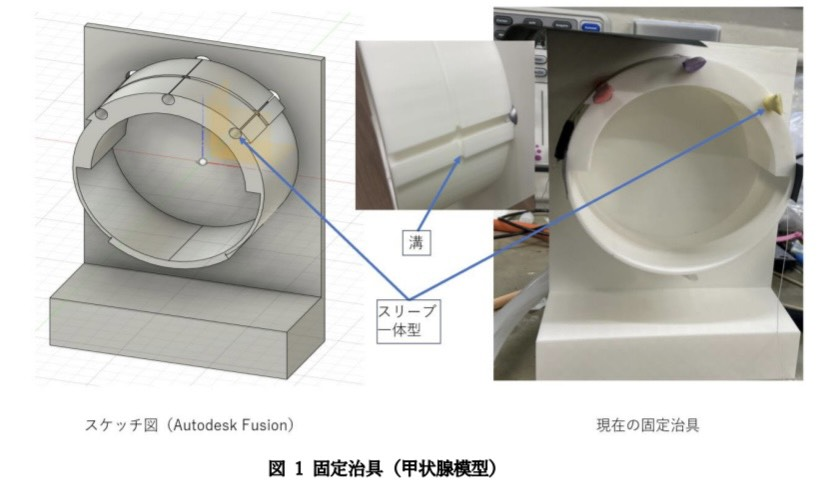

命を守るテクノロジー
甲状腺術後出血の早期発見を目指して
Scroll
見えない危険
甲状腺の手術後、首の内部で出血が起こることがあります。
しかし、皮膚の下で血が溜まっていくため、外見からは発見が遅れがちです。
気道が圧迫され、命に関わる状態になるまで気づかないこともあります。
現在、これを確実に自動検出する機器は存在しません。
「首に巻くだけ」で守る
私たちは、柔軟なウレタンセンサーを用いた新しい検出手法を開発しています。
首周りのわずかな膨らみをセンサーが感知。
患者さんの負担にならず、かつ高精度に異常を知らせるデバイスを目指しています。
試行錯誤の軌跡
失敗と成功を繰り返し、形にしていく。
01. 現象の再現
まずは首の模型を3Dプリンタで作成。
内部で風船を膨らませることで、血管からの出血による「腫れ」を忠実に再現しました。
ここから実験が始まります。

図1: 固定治具と甲状腺模型 (3D CAD & 実物)
02. プロトタイプ開発
実際に人が装着できる形へ。
サポーターやレジン（樹脂）を組み合わせ、センサーを適切な位置に固定する脱着装置を自作。
素材選びから加工まで、すべて自分たちの手で行っています。

図2: サポーターとレジンを用いた現在の脱着装置